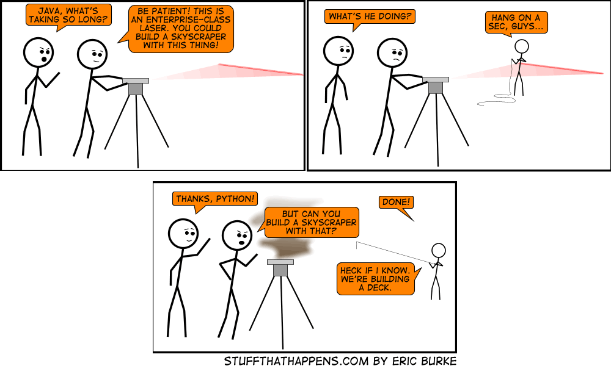

GWT is web scale!

Или как использовать GWT в крупномасштабной js-разработке если вам не нравится Java
Kharkiv JS, 15/Dec/2012
Масштабные приложения на javascript
Что значит «масштабность» ?
~ 150 000 строк кода (LOC)
~ 1000 классов
Браузер превращается в OC
Web Page → RIA
«Одностраничность»
Почти десктопное приложение
Отладка
|
Проблемы языка
No package mechanism
Global namespace
Octal integer literals
Weirdness initializing arrays
Подробности на wtfjs.com и Ward Cunningham
Экосистема
Оптимизаторы, обфускаторы (Closure, JSMin, YUI compressor)
Фреймворки (Backbone, Ember, Spine, Knockout, JavascriptMVC)
Прочие уровни абстракции (jQuery, Persistence.js, )
Аж глаза разбегаются!
Решения?
Как мы выбирали
Архитектура MVC/MVP
Custom widgets / easy redesign
i18n/l10n
Система сборки/упаковки
Кроссбраузерность
Документация
Community support
Unit testing
2009 год
Вроде бы вариантов масса?
SproutCore
|
Cappucino
|
Javascript MVC
— тонны всего в одной кучe
YUI, ExtJS, Dojo, jQuery UI
— MVC/MVP ?
— Неа, не слышали
Грустное наследие библиотеки виджетов
Картина сегодня
|
|
По результам опроса на InfoQ.com
Google Web Toolkit
Заглянем внутрь
Java 1.6+
Все плюсы
… и минусы
Архитектура MVP
mvp4g
Начиная с 2.2 — из коробки
Модульность
Проекты (отдельное single-page приложение)
Библиотеки (обычные jar файлы)
Модули (понятие уровня фреймворка)
Шины сообщений (общая, модульная)
Сode-splitting (загрузка по частям)
Декларативные интерфейсы
Псевдо HTML / ContactView.ui.xml
<ui:UiBinder xmlns:ui="urn:ui:com.google.gwt.uibinder"
xmlns:g="urn:import:com.google.gwt.user.client.ui">
<g:HTMLPanel>
<w:LoadingStateWidget ui:field="loadingStateWidget" visible="false"/>
<ul>
<li><span>One</span></li>
<li><span>Two</span></li>
<li><span>Three</span></li>
</ul>
</g:HTMLPanel>
</ui:UiBinder>
Декларативные интерфейсы
Доступ из Java-кода
public class ContactView extends BaseView implements IContactView {
@UiTemplate("ContactView.ui.xml")
interface Binder extends UiBinder<FlowPanel, ContactView> {
}
private static final Binder binder = GWT.create(Binder.class);
@UiField LoadingStateWidget loadingStateWidget;
@Override
protected Widget createWidget() {
FlowPanel widget = binder.createAndBindUi(this);
}
@Override
public void setBusy(boolean isBusy) {
loadingStateWidget.setVisible(isBusy)
}
}
ClientBundle
Инлайновый CSS
Cпрайты
Любые данные
Deffered binding
GWT подход для кросс-браузерности
Отдельная пермутация для каждого браузера
Реализовано через Java интерфейсы
Javascript всегда в силе!
JSNI
Вызовы в обе стороны
Порядок загрузки нас не парит
Трушный Java-debug
Полные стэктрейсы в ява-код
Символьная информация в продакшн-билдах
Java stacktraces / super dev mode
Все плюшки прямо из Eclipse
GWT Compiler
Оптимизация кода
Обфускация
Сжатие
Разбивка (code splitting)
ant build
Неужели GWT решит все мои проблемы?
Цистерна дёгтя
Development mode
Требует плагина под каждый браузер
Тормоза
Тормоза
Тормоза
Все недостатки Java
В разы больше кода
Строгая типизация
Тонны анонимных интерфейсов
Заточено под Java backend
Shared модели данных
GWT-RPC
RequestFactory
Много ли opensource?
gwtQuery
gwt-log
…
Увы, немного — но всегда можно портировать
Пересадить с JS на Java?
— Вы шутите, да?
Немного наших фактов
Кто такие «мы»?
nimble.com
Cоциальная CRM
Контакты, Email, Календарь
Обьем проекта
~ 168 KLOC чистый java код
~ 55 KLOC комментарии
~ 1000 файлов
~ 10 KLOC разметка
~ 12 KLOC стили
10 Модулей
Контакты
Сообщения
Настройки
Социалка
Прочие служебные
Результирующий обьем кода
Весь код в 11-ти файлах + 1 bootstrap
Непакованный
- Дебаг — 70Mb
- Продакшн — 4.6Mb
Запакованный
- 2.2Mb с картинками и стилями
Скорость разработки
Easy
Скорость разработки
Simple
Прочее
[2,6] разработчиков
Билд идет 15 минут
Много RAM и только SSD
Простая Java когда бэкенд чужой
Тесты были, но пропали — последствий не замечено
Выводы
Космолеты vs. Велосипеды
Startup / Enterprise ?
Серебрянных пуль нету